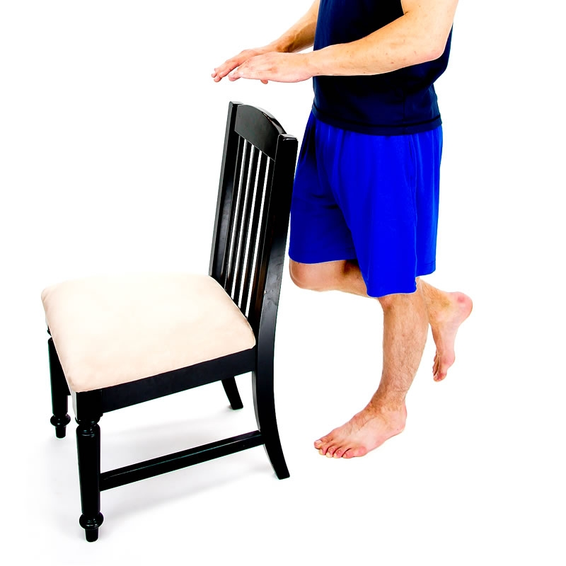
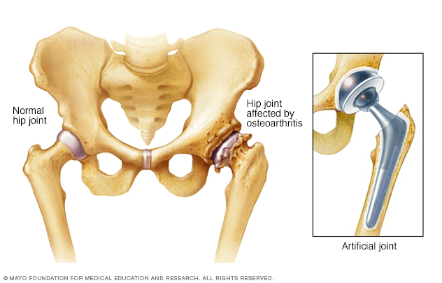

← Explore all Post-Surgical Rehabilitation services
Joint Replacement Rehabilitation at Resolve Physical Therapy
Total knee replacement and total hip replacement are among the most successful orthopedic procedures performed today. Each year, hundreds of thousands of Americans undergo joint replacement surgery to relieve chronic pain and restore mobility lost to arthritis, injury, or degenerative joint disease. In Bend, Oregon, where hiking, skiing, cycling, and other outdoor activities define the lifestyle, successful joint replacement recovery means more than walking without pain. It means getting back to the activities that make living in Central Oregon extraordinary.
At Resolve Physical Therapy, we provide individualized post-surgical rehabilitation for total knee and total hip replacement patients. Every session is one-on-one with a Doctor of Physical Therapy who follows your surgeon's protocol while adapting the plan to your body, your goals, and your response to treatment. Founded in 2018 by Jenny McAteer, DPT, our clinic offers the expert orthopedic care and personal attention that make the difference between an average recovery and an exceptional one.
Total Knee Replacement Recovery

Total knee arthroplasty replaces the damaged surfaces of the knee joint with metal and polyethylene components that restore smooth, pain-free motion. While the surgery itself is highly refined, the rehabilitation process is what determines your long-term functional outcome. Patients who commit to a structured physical therapy program consistently achieve better range of motion, strength, and functional performance than those who rely on home exercises alone.
Week-by-Week Recovery Timeline
Weeks 1–2: Acute Recovery Phase
The first two weeks after surgery focus on managing pain and swelling, protecting the surgical site, and initiating gentle range of motion exercises. Your physical therapist will work with you on ankle pumps, quad sets, straight leg raises, and assisted knee flexion to begin restoring movement. Walking with a walker or crutches is the primary functional activity, and you will practice transfers in and out of bed, chairs, and the car. Achieving at least 90 degrees of knee flexion by the end of week two is a common early benchmark.
Weeks 3–6: Mobility and Strengthening Phase
During this phase, the emphasis shifts to progressive strengthening and functional mobility. Your therapist will advance your exercises to include mini squats, step-ups, stationary cycling, and progressive resistance training for the quadriceps, hamstrings, and hip muscles. Most patients transition from a walker to a cane during this period. Range of motion goals include achieving at least 110 degrees of flexion and full extension (zero degrees). Balance and proprioception exercises begin to restore the joint position sense that is temporarily disrupted by surgery.
Weeks 7–12: Functional Independence Phase
By weeks seven through twelve, most patients are walking independently without assistive devices, climbing stairs with confidence, and performing daily activities without significant limitation. Physical therapy during this phase focuses on advanced strengthening, endurance training, and the sport-specific or recreational movements that define your lifestyle. For Bend residents, this often means progressive trail walking, return to the gym, or preparation for cycling and skiing. Your therapist will use objective strength testing to verify that both legs are performing symmetrically.
Months 3–6: Return to Activity Phase
Continued improvement in strength, endurance, and confidence occurs throughout the three-to-six-month window after surgery. Many patients return to activities including hiking, golf, cycling, swimming, and skiing during this period. Your physical therapist will design a progressive activity plan based on your goals and your surgeon's guidelines. While formal physical therapy visits may taper during this phase, you will have a comprehensive home exercise program and the knowledge to continue progressing independently.
Total Hip Replacement Recovery

Total hip arthroplasty replaces the worn ball-and-socket joint of the hip with prosthetic components that restore smooth, pain-free movement. Modern surgical approaches, including the anterior approach and posterior approach, have different implications for post-operative precautions and rehabilitation progression. At Resolve Physical Therapy, we follow your surgeon's specific protocol and tailor our treatment to the surgical approach used in your procedure.
Surgical Approach and Precautions
The surgical approach determines which movements must be restricted during the early healing period to protect the new joint from dislocation. Posterior approach procedures traditionally require avoiding combined hip flexion beyond 90 degrees, internal rotation, and adduction across midline for the first six to twelve weeks. Anterior approach procedures generally have fewer movement restrictions, allowing faster progression of functional activities. Your physical therapist at Resolve PT will review your specific precautions at your first visit and ensure that all exercises and activities comply with your surgeon's guidelines.
Recovery Phases
Weeks 1–2: Protected Mobility
Early rehabilitation focuses on safe mobility with assistive devices, gentle hip and knee range of motion exercises, and education on precautions specific to your surgical approach. You will practice safe transfers, walking with a walker or crutches, and basic exercises including ankle pumps, gluteal sets, and supported hip abduction. Swelling management through elevation and ice is emphasized during this phase.
Weeks 3–6: Progressive Strengthening
As tissue healing progresses, your physical therapy program advances to include more demanding strengthening exercises for the hip abductors, extensors, and external rotators. These muscles are critical for normal walking mechanics and single-leg stability. Exercises during this phase may include standing hip abduction, bridging, mini squats, stationary cycling, and progressive walking distance. Most patients transition from a walker to a cane and begin walking short distances without assistive devices.
Weeks 7–12: Functional Restoration
With movement precautions typically lifted between six and twelve weeks (per your surgeon's guidance), rehabilitation progresses to full functional restoration. Advanced balance training, progressive resistance exercises, stair negotiation, and walking endurance become the focus. Your therapist will assess your gait pattern and address any compensatory movement habits that developed before or after surgery. The goal is to restore a smooth, symmetrical walking pattern without a limp.
Months 3–6: Return to Recreation
Most hip replacement patients can return to recreational activities between three and six months after surgery. Hiking, cycling, swimming, golf, and even skiing are realistic goals for many patients in the Bend community. Higher-impact activities may be modified based on implant type and surgeon preference. Your physical therapist will design a graduated return-to-activity plan that progresses safely based on your strength, balance, and endurance measurements.
Your Home Exercise Program
Physical therapy sessions at Resolve PT occur two to three times per week, but the work you do between sessions is equally important for your recovery. Your therapist will design a home exercise program that is updated as you progress through each phase of rehabilitation. The program will include specific exercises, repetition and set guidelines, and clear instructions on proper form.
Common home exercises after joint replacement include:
- Ankle pumps — to promote circulation and reduce swelling risk
- Quad sets and straight leg raises — to activate and strengthen the quadriceps
- Heel slides — to progressively increase knee flexion range of motion
- Gluteal sets and bridging — to activate and strengthen the hip extensors
- Standing hip abduction — to rebuild the gluteus medius for walking stability
- Stationary cycling — for cardiovascular fitness and range of motion
- Walking program — gradually increasing distance and pace as tolerated
- Balance exercises — to restore proprioception and fall prevention
Your therapist will ensure that you can perform each exercise safely and with correct technique before adding it to your home program. As your strength and mobility improve, exercises will be progressed in difficulty, resistance, and functional complexity.
Related Services
Joint replacement is one component of our comprehensive post-surgical rehabilitation program at Resolve Physical Therapy. If you are recovering from ACL reconstruction, rotator cuff repair, meniscus surgery, or Achilles tendon repair, visit our ACL and Shoulder Recovery page for detailed information about those rehabilitation protocols.
Frequently Asked Questions
When should I start physical therapy after a knee or hip replacement?
Physical therapy typically begins the day after surgery in the hospital. Outpatient physical therapy at Resolve PT usually starts within one to two weeks after discharge, depending on your surgeon's protocol and your wound healing. Early initiation of PT is associated with better outcomes, including faster return of range of motion, reduced stiffness, and improved functional independence.
How long does it take to fully recover from a total knee replacement?
Most patients achieve functional independence within six to eight weeks after surgery, meaning they can walk without assistive devices, climb stairs, and perform daily activities. Full recovery, including return to recreational activities like hiking, cycling, and skiing, typically takes three to six months. Continued improvement in strength and endurance can occur for up to 12 months after surgery. Your recovery timeline at Resolve PT will be guided by objective measurements of strength, range of motion, and functional performance.
What activities can I do after a hip replacement?
Modern hip replacement techniques and implants allow most patients to return to a wide range of activities including walking, hiking, cycling, swimming, golf, and even skiing. Activities that involve high-impact loading or extreme ranges of motion may need to be modified based on your surgeon's recommendations and the type of implant used. At Resolve PT, we work with you to safely progress toward the activities that matter most to you.
Does insurance cover physical therapy after joint replacement?
Yes. Post-surgical physical therapy after joint replacement is covered by virtually all insurance plans, including Medicare and Medicaid/OHP. At Resolve Physical Therapy, we verify your benefits before your first visit and help you understand any copay or deductible obligations. Call us at (541) 306-1099 to verify your specific coverage.
Schedule Your Post-Surgical Evaluation
The quality of your rehabilitation determines the quality of your recovery. At Resolve Physical Therapy in Bend, Oregon, every joint replacement patient receives one-on-one care with a Doctor of Physical Therapy for the full duration of every session. Contact us to schedule your first post-operative visit.